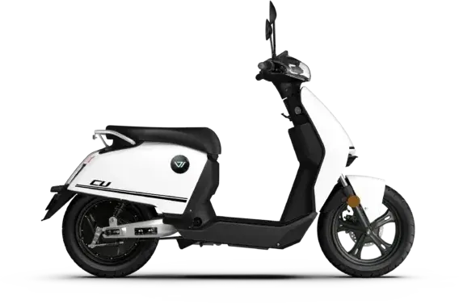
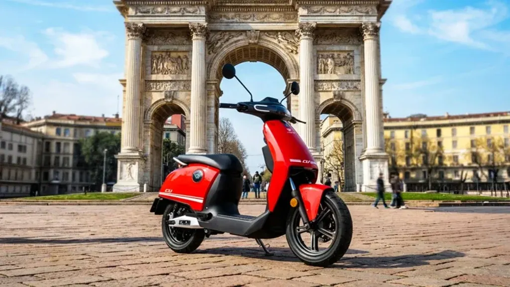
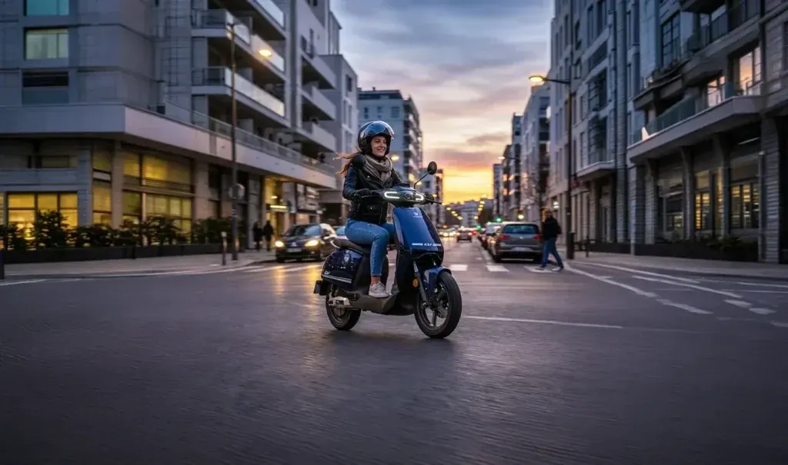
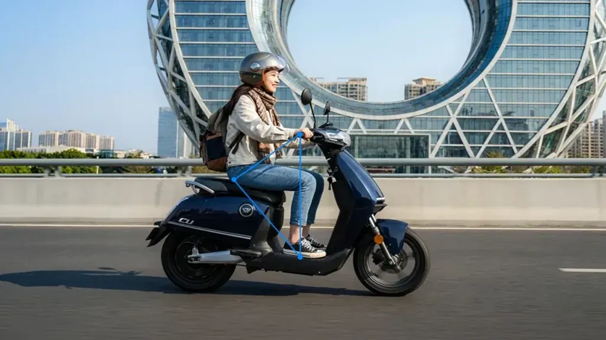

Vmoto
CITI
AM Eléctrica · 6,6 kW · Scooter
Propuesta de OpsPilot para Expomoto Córdoba, en revisión. No es la web oficial: expomotocordoba.es

Vmoto
Donde el estilo se fusiona con la comodidad
Precio y financiación: te los damos al momento por teléfono (pendientes de publicar en la web).



La CU está diseñada para quienes valoran la elegancia y la practicidad en la movilidad eléctrica urbana. Su diseño compacto presenta líneas limpias y modernas, ideales para desplazarse con agilidad por la ciudad. El asiento, cómodo y adaptable, proporciona un excelente soporte ergonómico, garantizando el máximo confort incluso en trayectos más largos.
La CU está equipada con un motor eléctrico en el buje de la rueda trasera que ofrece una máxima de 2,4 kW. Pensada para la movilidad urbana sostenible, alcanza una velocidad máxima de 45 km/h, asegurando una conducción ágil y una respuesta eficiente en cualquier situación.
La CU ha sido diseñada a partir de avanzados estudios ergonómicos para garantizar una postura de conducción natural y correcta. Su asiento confortable, junto con un sistema de suspensión eficiente, reduce vibraciones y esfuerzos, minimizando la fatiga incluso en trayectos prolongados.
| Motor | motor en rueda |
|---|---|
| Homologación | L1e – (EQUIVALENTE A 50cc) |
| Potencia nominal | 2,2 kW |
| Potencia máxima | 2,4 kW |
| Refrigeración | Aire |
| Velocidad máxima | 45 km/h |
| Autonomía | 65 km |
| Ángulo de pendiente superable | 15° |
| Batería | Batería de litio |
| Número de baterías | 1 |
| Capacidad por batería | 1,7 kWh (72V 24Ah) |
| Tiempo de recarga por cargador y batería disponible | 5,5 h con el cargador por defecto 70V5A (35300-TACH-H000) |
| Suspensión delantera | Doble brazo hidráulico |
| Suspensión trasera | Doble amortiguador hidráulico |
| Freno delantero | Disco 180mm |
| Neumáticos | Del. 90/90-12 | Tras. 90/90-12 |
| Llantas | Del. 2.15-12 | Tras. 2.15-12 |
| Distancia entre ejes | 1217 mm |
| Peso orden de marcha (sin batería) | 64 kg (sin batería) |
| Largo x ancho x alto | 1782 mm × 727 mm × 1087 mm |
| Altura libre de suelo | 140 mm |
| Altura de asiento | 750 mm |
| Peso máximo admisible (mmta) | 227 Kg |
| Ocupantes | 2 |
| Colores | Negro, Blanco |
Datos de la marca, tal como se publican en expomotocordoba.es.